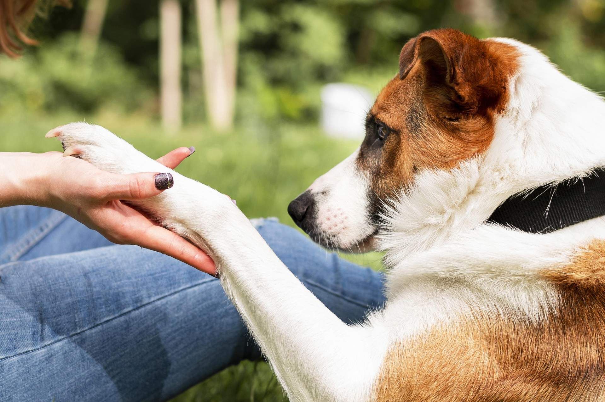

¿Que son los perros?
Un perro es un mamífero doméstico y uno de los primeros animales que los seres humanos domesticaron. Pertenece a la familia Canidae y al género Canis. Los perros son conocidos por su lealtad, inteligencia y capacidad para formar fuertes vínculos con los seres humanos.
Existen muchas razas diferentes de perros, cada una con sus propias características físicas y temperamentales. Los perros pueden ser utilizados para una variedad de propósitos, como compañía, trabajo, caza y pastoreo, entre otros. Son animales sociales y suelen disfrutar de la interacción con las personas y otros animales.

Entre las razas de perros mas comunes podemos incluir a los siguientes:
Labrador Retriever: Conocidos por su amabilidad y energía, son excelentes compañeros y muy inteligentes.
Golden Retriever: Famosos por su naturaleza amistosa y su pelaje dorado, son excelentes mascotas familiares y muy adartables
Bulldog: Reconocibles por su aspecto robusto y su cara arrugada, son leales y tienen una personalidad tranquila.
Siberian Husky: Conocidos por su aspecto de lobo y sus ojos azules, son enérgicos y necesitan mucho ejercicio.
Chihuahua: Muy pequeños pero con una gran personalidad, son leales y suelen estar muy unidos a sus dueños.

Los cuidados que debe un perro domesticado son los siguientes:
1. Alimentación
Dieta Balanceada: Proporciona un alimento de alta calidad adecuado para su edad, tamaño y nivel de actividad. Consulta con un veterinario para elegir la mejor dieta.
Agua Fresca: Asegúrate de que siempre tenga acceso a agua limpia y fresca.
2. Ejercicio
Actividad Física: Los perros necesitan ejercicio regular para mantenerse saludables y felices. La cantidad varía según la raza y la edad, pero las caminatas diarias y el juego son esenciales.
Estimulación Mental: Juguetes interactivos, juegos y entrenamiento ayudan a mantener su mente activa.
3. Higiene
Baño y Cepillado: La frecuencia del baño depende del tipo de pelaje y las actividades del perro. Los perros de pelo largo pueden necesitar cepillado regular para evitar enredos.
Corte de Uñas: Mantén las uñas recortadas para evitar molestias y problemas en la marcha.
Higiene Dental: Cepilla sus dientes regularmente para prevenir problemas dentales. Existen también golosinas y juguetes que ayudan a la limpieza dental.
4. Salud
Higiene Dental: Cepilla sus dientes regularmente para prevenir problemas dentales. Existen también golosinas y juguetes que ayudan a la limpieza dental.
Visitas al Veterinario: Lleva a tu perro a chequeos regulares para detectar problemas de salud y recibir las vacunas necesarias.
Desparasitación: Asegúrate de que tu perro reciba desparasitaciones periódicas según las recomendaciones del veterinario.
Control de Parásitos: Usa tratamientos para pulgas y garrapatas si es necesario.
5. Entrenamiento y Socialización
Obediencia Básica: Enseña comandos básicos como “sentado”, “quieto” y “ven aquí”. El entrenamiento refuerza la obediencia y mejora la convivencia.
Socialización: Expón a tu perro a diferentes personas, animales y entornos para desarrollar su confianza y reducir el miedo.
6. Comodidad y Seguridad
Cama y Espacio: Proporciona una cama cómoda y un espacio seguro para que tu perro descanse.
Identificación: Asegúrate de que tenga una placa con tu información de contacto y considera un microchip para mayor seguridad en caso de pérdida.
7. Atención y Amor
Tiempo de Calidad: Dedica tiempo para jugar, acariciar y hablar con tu perro. Los perros prosperan con la atención y el afecto de sus dueños.
Un cuidado adecuado asegura que tu perro tenga una vida saludable y feliz. Adaptar estos cuidados a las necesidades específicas de tu mascota es clave para su bienestar.
